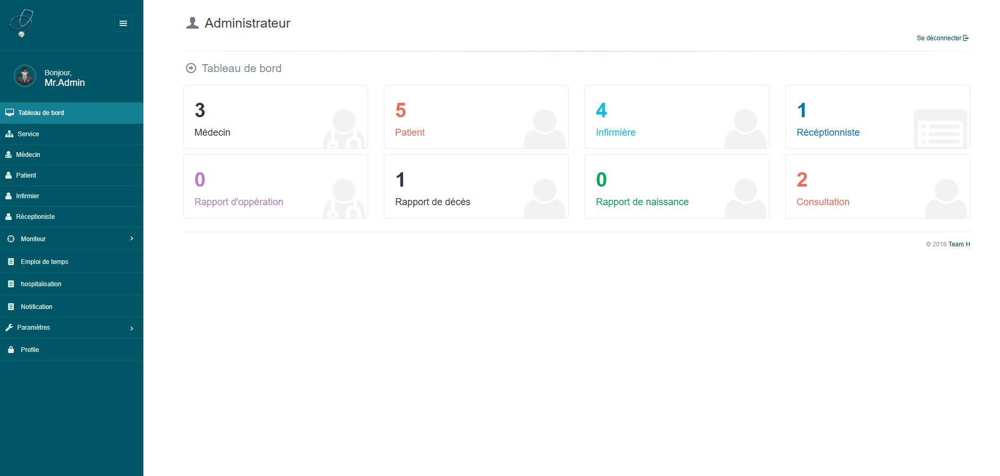
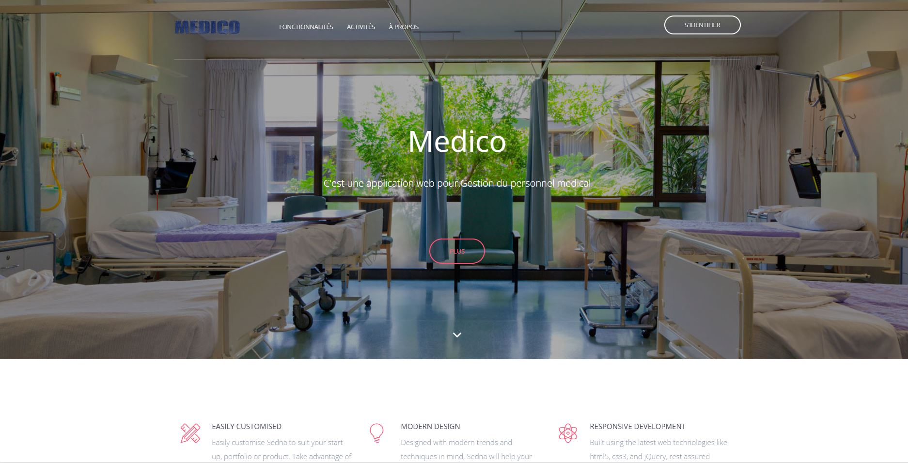
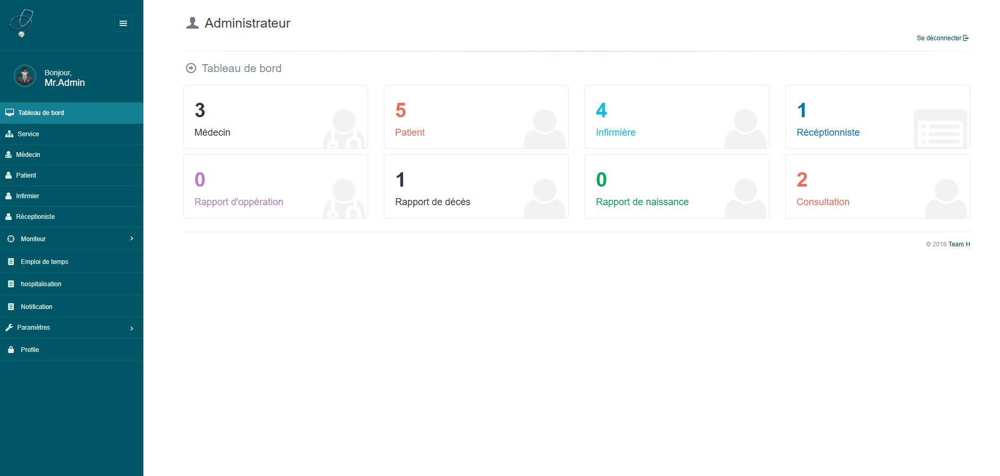
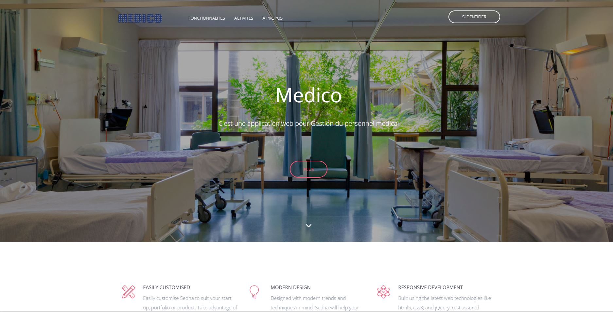
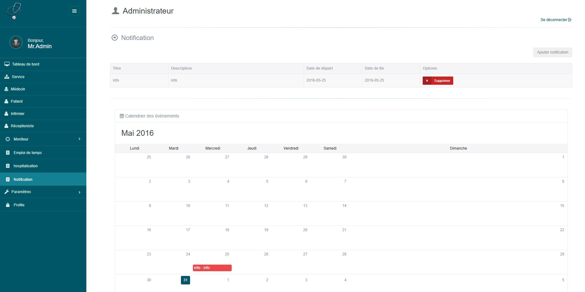
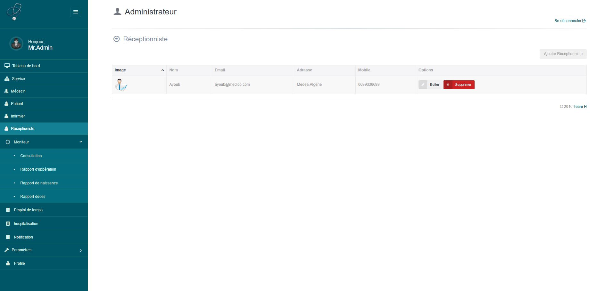
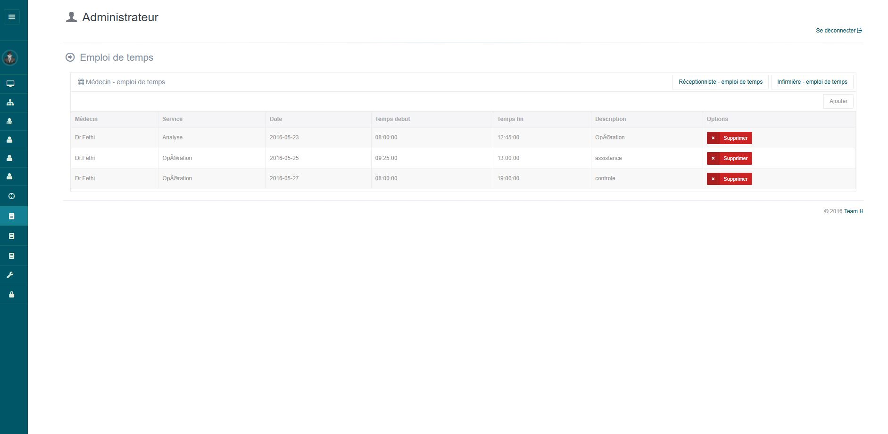
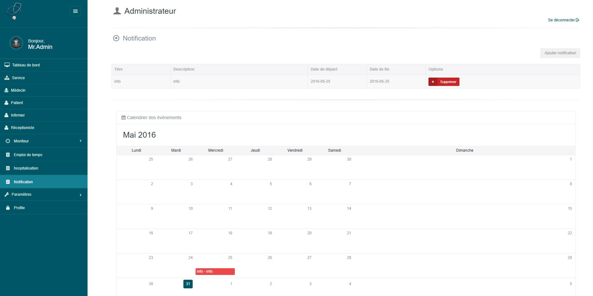
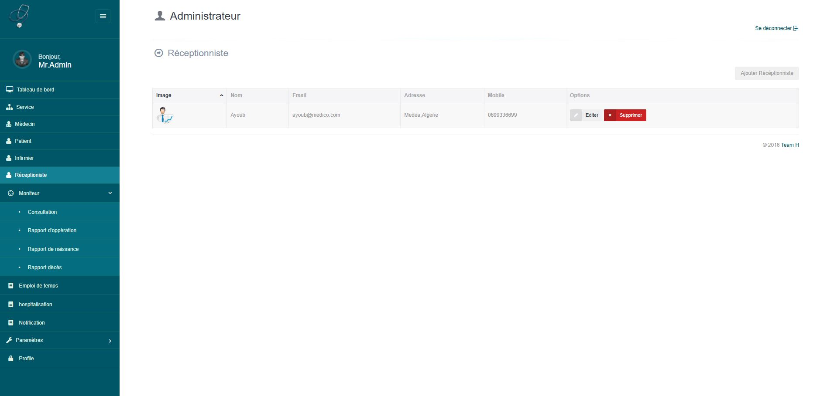
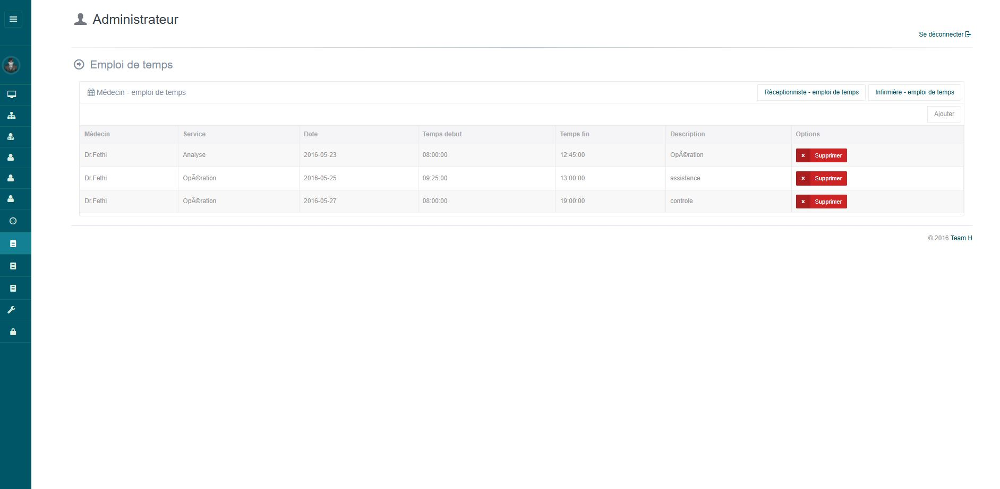

Application Web Médicale
📝 Résumé du projet
Ce projet vise la conception et la réalisation d’une application web de gestion des activités médicales au sein d’un établissement de santé. Développée en PHP/MySQL, l’application permet la gestion des patients, du personnel médical, des consultations, hospitalisations et rapports médicaux.
Elle offre des interfaces personnalisées selon les rôles (administrateur, médecin, infirmier, réceptionniste), et facilite l’organisation des tâches médicales quotidiennes, avec un tableau de bord, un emploi du temps, un système de notification et des statistiques.
📄 Télécharger mon CV (PDF)
Auteur : Tarek Lahreche
📧 lahreche.tarek.geo@gmail.com
⚙️ Fonctionnalités
- Gestion des patients, médecins, infirmiers
- Consultations, hospitalisations et rapports médicaux
- Interface responsive avec Bootstrap
- Système d’authentification
📥 Installation locale
- Copier le dossier dans
htdocs(XAMPP) - Lancer Apache et MySQL
- Importer
medical.sqlvia phpMyAdmin - Aller à
http://localhost/application_medicale
 



 





📬 Me contacter
📧 Email : lahreche.tarek.geo@gmail.com
💼 LinkedIn : linkedin.com/in/tarek-lahreche-